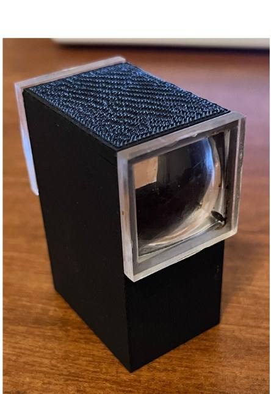
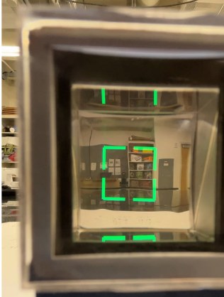
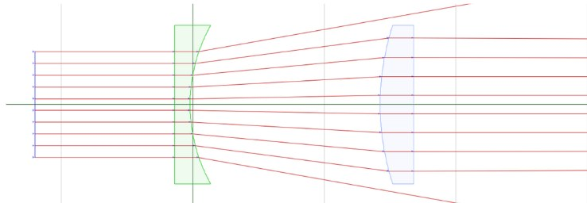
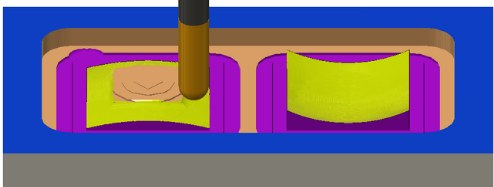
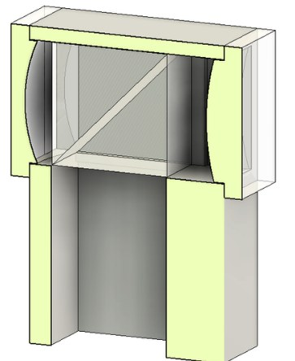

Future Frame Hybrid Viewfinder
A hybrid viewfinder prototype that overlays an infinity-focused image in mid-air, using custom optics I designed, machined, and polished myself.
- Tools
- Autodesk Fusion (CAD and CAM), CNC router
- Optics
- Concave-convex afocal pair, 45° beam splitter
- Status
- Working prototype


Optics
Two acrylic lenses, one concave and one convex, form an afocal system. It's laid out like a simple Galilean telescope used in reverse, so the scene appears demagnified, the way an optical camera viewfinder frames a wider view.
For the heads-up overlay, a 45-degree beam splitter projects a display into the optical path. The rear lens element focuses the screen at infinity, so the overlay and the scene are in focus at the same time.

Making the lenses
I machined the acrylic lenses on a CNC router from toolpaths generated in Fusion CAM, then polished them to optical clarity.

